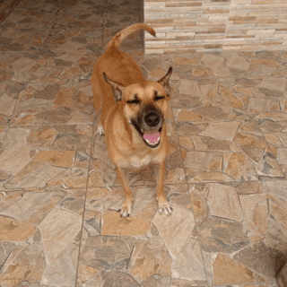

Animais Perdidos
Aurora tem 4 anos e sumiu no dia 10/04/2022 após queima de fogos no bairro em que mora
Sumiu por volta das 19:00 no bairro Vila Assunção - Santo André
Caso tenha visto a Aurora, por favor entrar em contato através do formulário de Mensagem.
Vamos ajudar a Aurora voltar pra casa. Os donos dela estão desesperados.
Totó tem 8 anos e foi encontrado próximo ao parque Ana Brandão em Santo André no dia 15/06/2022
Foi resgatado pela Luiza e desde então ela está procurando os donos do Totó nas redes sociais, mas sem sucesso
Caso você seja o dono do Totó ou conhece a familinha dele, entre em contato para ajudar através do campo de mensagem
Vamos ajudar a Totó voltar pra casa.
Sam tem 3 anos e sumiu de casa no dia 25/02/2022
Ele estava na garagem de casa no bairro Rudge Ramos - São Bernardo do Campo enquanto seus donos trabalhava.
A casa foi assaltada e o nosso amiguinho sumiu.
Os donos estão desesperados, então se souber alguma informação, entre em contato conosco por mensagem